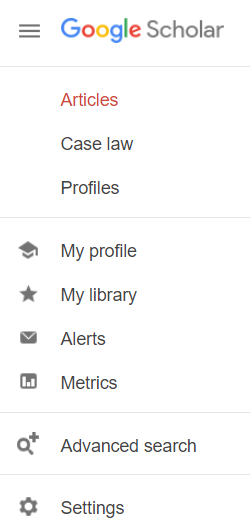

Digitizing plots for echemdb
The echemdb.org collection accepts plots commonly found in electrochemical research papers, e.g., cyclic voltammograms. The following example plot is provided in Figure 2a in the publication example (PDF).

Data uploaded to echemdb.org requires specifically annotated SVG files, including a specific metadata file, and a bibliography file explained in the following step by step tutorial.
Step 1: Prepare PDF and BIB files
1: Create a new directory
The directory should be named FirstAuthorName_Year_FirstTitleWord_FirstPageNr.
Note
Only use lowercase names and words.
For the example PDF this comes down to
mustermann_2021_svgdigitizer_1
The page number should be the page number in the published pdf. Since the example is not published the page number is 1. In other cases this could be 1021.
Put the publication PDF in the newly created directory. The PDF should be named according to the same scheme:
mustermann_2021_svgdigitizer_1.pdf
2: Place a BIB file in the folder
A suggested approach is to search for the article with Google Scholar.
Modify the scholar settings so that a BibTeX link appears below the citation:
Click on the 3 lines next to the Google Scholar logo and choose Settings
{kind=link}
Select Show links to import citations into BibTeX

An import into BibTeX link appears below the linked article:
{kind=link}
Download the bib file or save the content to a file named:
mustermann_2021_svgdigitizer_1.bib
Open the file and change the key, such that it matches the folder name:

Note
Fix any typos in the title and other entries if necessary.
The folder should now contain the following files:
mustermann_2021_svgdigitizer_1.bib
mustermann_2021_svgdigitizer_1.pdf
Step 2: Prepare SVG and PNG files from the PDF
Use the CLI to create SVG and PNG files from the PDF, i.e., execute the following command in the folder with the PDF.
!svgdigitizer paginate /files/mustermann_2021_svgdigitizer_1/mustermann_2021_svgdigitizer_1.pdf
Traceback (most recent call last):
File "/home/runner/work/svgdigitizer/svgdigitizer/.pixi/envs/dev/bin/svgdigitizer", line 10, in <module>
sys.exit(cli())
~~~^^
File "/home/runner/work/svgdigitizer/svgdigitizer/.pixi/envs/dev/lib/python3.14/site-packages/click/core.py", line 1462, in __call__
return self.main(*args, **kwargs)
~~~~~~~~~^^^^^^^^^^^^^^^^^
File "/home/runner/work/svgdigitizer/svgdigitizer/.pixi/envs/dev/lib/python3.14/site-packages/click/core.py", line 1383, in main
rv = self.invoke(ctx)
File "/home/runner/work/svgdigitizer/svgdigitizer/.pixi/envs/dev/lib/python3.14/site-packages/click/core.py", line 1850, in invoke
return _process_result(sub_ctx.command.invoke(sub_ctx))
~~~~~~~~~~~~~~~~~~~~~~^^^^^^^^^
File "/home/runner/work/svgdigitizer/svgdigitizer/.pixi/envs/dev/lib/python3.14/site-packages/click/core.py", line 1246, in invoke
return ctx.invoke(self.callback, **ctx.params)
~~~~~~~~~~^^^^^^^^^^^^^^^^^^^^^^^^^^^^^
File "/home/runner/work/svgdigitizer/svgdigitizer/.pixi/envs/dev/lib/python3.14/site-packages/click/core.py", line 814, in invoke
return callback(*args, **kwargs)
File "/home/runner/work/svgdigitizer/svgdigitizer/svgdigitizer/entrypoint.py", line 791, in paginate
page_range = range(doc.num_pages)
^^^^^^^^^^^^^
File "/home/runner/work/svgdigitizer/svgdigitizer/.pixi/envs/dev/lib/python3.14/functools.py", line 1127, in __get__
val = self.func(instance)
File "/home/runner/work/svgdigitizer/svgdigitizer/svgdigitizer/pdf.py", line 250, in num_pages
return self.doc.page_count
^^^^^^^^
File "/home/runner/work/svgdigitizer/svgdigitizer/.pixi/envs/dev/lib/python3.14/functools.py", line 1127, in __get__
val = self.func(instance)
File "/home/runner/work/svgdigitizer/svgdigitizer/svgdigitizer/pdf.py", line 170, in doc
return pymupdf.open(self.filepath)
~~~~~~~~~~~~^^^^^^^^^^^^^^^
File "/home/runner/work/svgdigitizer/svgdigitizer/.pixi/envs/dev/lib/python3.14/site-packages/pymupdf/__init__.py", line 2975, in __init__
raise FileNotFoundError(f"no such file: '{filename}'")
pymupdf.FileNotFoundError: no such file: '/files/mustermann_2021_svgdigitizer_1/mustermann_2021_svgdigitizer_1.pdf'
The resulting filenames are of the form:
mustermann_2021_svgdigitizer_1_p0.png
mustermann_2021_svgdigitizer_1_p0.svg
Note
The page count starts from 0. It does not reflect the original page number in the PDF.
Step 3: Digitize a plot
1: Select an svg file with a plot to be digitized
The data in Figure 2a in the example PDF on page 2 (filename containing _p1) contains three curves, which can be identified by their colors. Each digitized curve should be in a separate SVG file.
Therefore, create a copy of the SVG file of page two (mustermann_2021_svgdigitizer_1_p1.svg) and rename it tomustermann_2021_svgdigitizer_1_f2a_blue.svg. Here, _f2a_blue indicates that the digitized curve is in Fig. 2b and that the curve is blue. The identifier will later also be included in the SVG file.
Note
_p1 can be omitted since the figure can unambiguously be identified by the figure and curve identifier label, e.g., _f2a_blue.
2: Annotate the SVG and curve tracing
In principle, the SVG is annotated and the curve is traced in the same way as described in the usage section. A few additional notes are provide below the annotated SVG.
{kind=link}
{kind=link}
Some remarks on the specific annotations:
The units on the x-axis must be equivalent to a voltage
Ugiven in units ofVand those on the y-axis equivalent to currentIin units ofAor current densityjin units ofA / m2.The voltage unit can given vs. a reference, such as
V vs. RHE. In that case the dimension should be a potentialEinstead of voltageU.The curve identifier should be a short unambiguous string, preferably without special characters.
A scan rate is mandatory. The information is not necessarily found in the figure (legend).
Add a figure identifier such as
figure: 2aAdd tags describing the data with commonly used acronyms. In this case:
tags: BCV, HER. Otherwise, the data can hardly be classified.Feel free to add a comment to the plot. Use a full sentence, for example,
comment: The curve is a bit noisy.Add a text field highlighting any additional measurements which were acquired simultaneously with the digitized curve and are shown in the same figure. In the example, the bottom plot shows DEMS data. This can be indicated by
linked: DEMS. The field can contain multiple types of measurements if applicable. Also, feel free to use acronyms commonly used in the community.
Step 4: Create a metadata file for each digitized curve
Create a YAML file with the same name as the SVG file: mustermann_2021_svgdigitizer_1_f2a_blue.yaml
The general structure of the yaml file for the website is provided at echemdb/electrochemistry-metadata-schema. However, it is possibly more convenient to reuse existing YAML files which exist already in the repository.
Adjust all keys in the file according to the content of the research article.
Step 5: Submit to echemdb.org
Propose a pull request in the GitHub repository that adds your directory to website/literature, e.g., by uploading the YAML, SVG and BIB files you created at https://github.com/echemdb/electrochemistry-data/upload/main/literature/svgdigitizer/mustermann_2021_svgdigitizer_1 (replace mustermann_2021_svgdigitizer_1 with the name of your data).
Notes
If you want to test whether your files were prepared correctly for echemdb.org, run:
svgdigitizer cv mustermann_2021_svgdigitizer_1_f2a_blue.svg --metadata mustermann_2021_svgdigitizer_1_f2a_blue.yaml --sampling-interval 0.001 --bibliography
This creates a CSV with the data of the plot and a JSON package file that you can inspect to verify that the data has been correctly extracted.